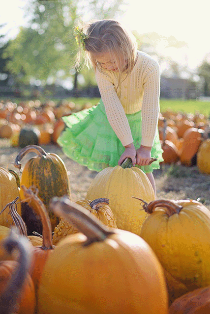

Halloween 2025: A Record-Breaking Scare For Consumers
Contrary to what you might expect in an era of inflation fatigue and tariff anxiety, Halloween 2025 is shaping up to be the biggest spending season in the holiday's retail history. Americans are expected to shell out a record $13.1 billion this year—up nearly 13% from last year's $11.6 billion and surpassing the previous 2023 record of $12.2 billion according to the National Retail Federation (NRF). But here's the spooky part: consumers aren't necessarily buying more. They're just paying more for what they get.
The Numbers Behind the Nightmare
NRF expects per-person spending to hit an all-time high of $114.45—that's nearly $11 more than last year and $6 above the 2023 record. Nearly three-quarters (73%) of Americans plan to celebrate the holiday, virtually unchanged from last year's 72%.
The Halloween shopping breakdown tells an interesting story about Americans’ priorities:
- Candy: $3.9 billion (up 11% from 2024)
- Costumes: $4.3 billion (up 13%)
- Decorations: $4.2 billion (up 11%)
- Greeting Cards: $700 million
What's driving these huge percentage increases? Ask any shopper and they'll tell you: everything just costs more.
The Tariff Monster Under the Bed
Here's where it gets truly frightening. A staggering 79% of Halloween shoppers say they expect higher prices specifically because of tariffs, according to the National Retail Federation.
Katherine Cullen, NRF's Vice President of Industry and Consumer Insights, acknowledges the concern directly: "Even with concerns about price increases due to tariffs, Halloween continues to resonate with consumers of all ages."
The tariff impact varies by category. Costumes—predominantly manufactured in China, Vietnam, and other Asian countries—have been hit hardest, with wholesale price increases ranging from 5% to 19%. Many retailers imported their Halloween inventory early this year, before tariffs fully kicked in, but not all were able to absorb the additional costs.
The Chocolate Crisis Continues
If you think candy prices look scary, you're seeing clearly. There are a multitude of reasons that has created this "perfect storm" for chocolate prices.
Cocoa futures hit $12,500 per metric ton late last year—the highest in decades. While futures have eased in recent weeks, it will likely take months before that translates into lower chocolate prices on store shelves, according to the September 2025 Quarterly Update at the Wells Fargo Agri-Food Institute.
The underlying problem? West Africa, which produces 70% of the world's cocoa, has been devastated by climate-driven production declines. Heavy rains led to black pod disease and crop rot, followed by El Niño-induced droughts that spread Cocoa Swollen Shoot Virus Disease. The result: global cocoa production fell 12.9% year-over-year in 2023/2024, creating the highest supply deficit in over 60 years.
An Empower survey found that 57% of Americans say higher prices are changing how much they spend on Halloween candy. Shrinkflation has become the industry's not-so-secret weapon—smaller bags, fewer pieces, reduced portion sizes.
How Are Grocers Responding
The good news for candy manufacturers and grocers: consumers still prioritize Halloween, and they're shopping at grocery stores to do it. Walk into any grocery store and you will never see a small section for Halloween chocolates and candies. For this treat driven holiday, it's about pushing big combo packs and people looking for bulk buys to fill the needs of those costumed doorbell ringers.
According to Vibenomics research, 68% of shoppers buy their Halloween candy at grocery stores—far outpacing box stores (48%) and drug/convenience stores (38%). Only 16% purchase Halloween candy online.
The smart grocers are adapting their strategies. According to NRF, discount stores have seen their share of Halloween shoppers jump from 37% in 2024 to 42% this year—a five-percentage-point increase that signals consumers hunting for value. In-store promotions remain the most influential form of advertising, with 74% of respondents saying promotions most likely influence their specific brand purchases.
As witnessed during this year’s Back to School promotions, brands are responding with extended promotional windows. According to RDSolutions, some retailers launched their displays as early as June. "Halloween isn't one night. It's a 10-week season, with consumers gearing up earlier each year," declares Marissa De Capria from Hershey during a recent industry webinar.
The Bottom Line
So, are we expecting consumer spending to be down? Quite the opposite. Despite inflation, tariff concerns, and cocoa crises, Americans are spending more on Halloween than ever before. This is spending driven by tradition and emotion rather than economic comfort. Families are committed to maintaining Halloween celebrations especially now where tensions are heated and emotions easily triggered, people are looking to Halloween for distraction and a bit of fun. The sad part is that they're not getting more for their money – they are getting smaller sizes and less product in every package.
The real question isn't whether consumers will spend this Halloween—they clearly will. It's whether they'll reach a breaking point where price increases finally overwhelm their enthusiasm for the holiday. We're not there yet, but with candy prices still rising and tariff uncertainty continuing, next year's Halloween could tell a very different story.
Despite all the economic headwinds, Halloween remains resilient, profitable, and growing. The treat, it seems, is still worth the financial trick for now.